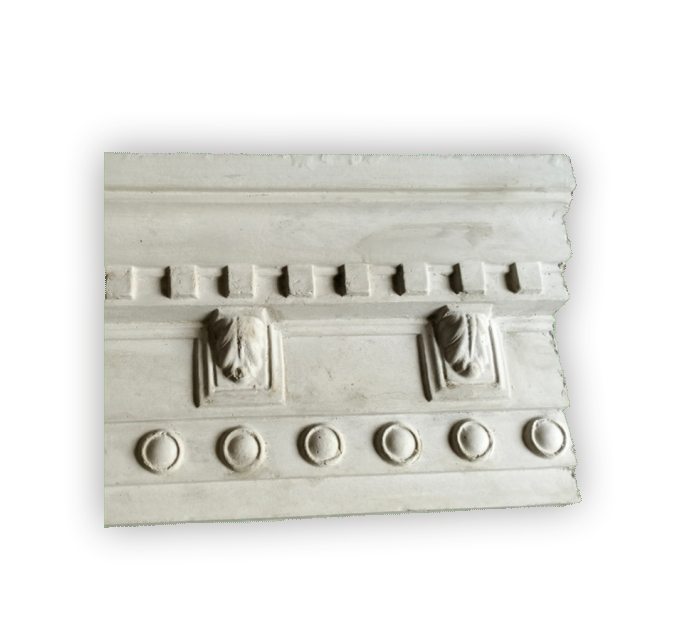
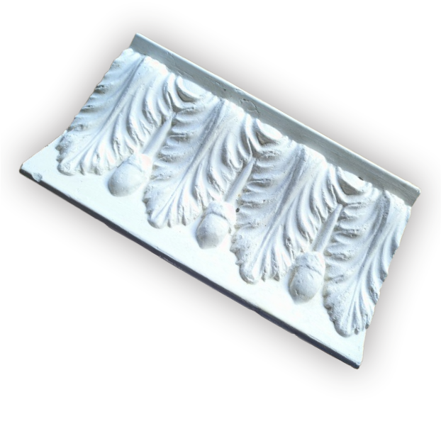
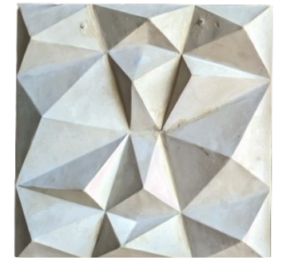
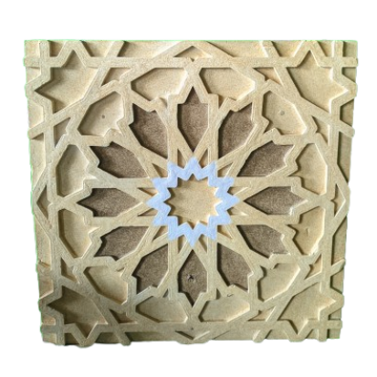
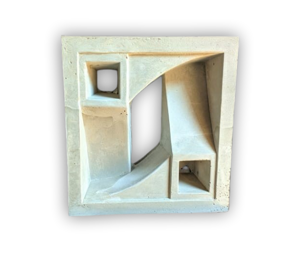
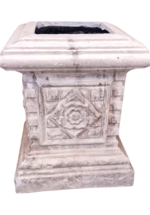
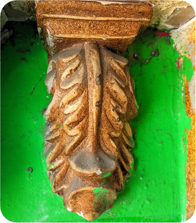

SAM JAYA INDAH
☰
Temukan berbagai kebutuhan ornamen bangunan beton GRC di Galeri Betonan SJI. Kami menyediakan Lis Plang, Krawangan, Pilar Doriq, hingga Roster dengan desain eksklusif. Komitmen kami adalah menyediakan material dekoratif yang tidak hanya indah dipandang, tetapi juga memiliki durabilitas maksimal untuk konstruksi jangka panjang.

Elemen dekoratif tepi atap yang kokoh dan tahan cuaca, memberikan kesan rapi pada eksterior bangunan.
Lihat Detail
Bingkai plafon interior dengan detail motif yang halus untuk mempertegas kemewahan ruangan Anda.
Lihat Detail
Hiasan timbul artistik untuk dinding atau plafon yang memberikan dimensi dan karakter unik pada hunian.
Lihat Detail
Panel beton berlubang sebagai ventilasi artistik atau penyekat ruangan yang estetis dan modern.
Lihat Detail
Tiang beton bergaya klasik yang memberikan kesan megah dan struktural pada fasad bangunan Anda.
Lihat Detail
Dudukan lampu hias plafon dengan berbagai motif elegan untuk mempercantik titik pencahayaan ruangan.
Lihat Detail
Lubang angin beton minimalis yang berfungsi menjaga sirkulasi udara sekaligus pemanis dinding.
Lihat Detail
>Alas penyangga pilar beton dengan desain kokoh untuk memperkuat tampilan kaki-kaki tiang bangunan.
Lihat Detail
Aksesori pembatas pilar yang memberikan detail sambungan lebih rapi dan dekoratif.
Lihat Detail
Hiasan puncak bangunan yang memberikan sentuhan akhir mewah dan ikonik pada struktur atap.
Lihat Detail
Garis dekoratif dinding untuk menciptakan gaya profil yang elegan pada permukaan bangunan.
Lihat Detail
Produk beton precast spesialis Sam Jaya Indah dengan campuran material yang lebih kuat dan tahan lama.
Lihat Detail
Ornamen fungsional khusus dengan desain teknis yang disesuaikan untuk kebutuhan konstruksi spesifik.
Lihat Detail
Elemen penyangga hiasan di bawah atap atau pilar yang memberikan detail arsitektur klasik.
Lihat Detail